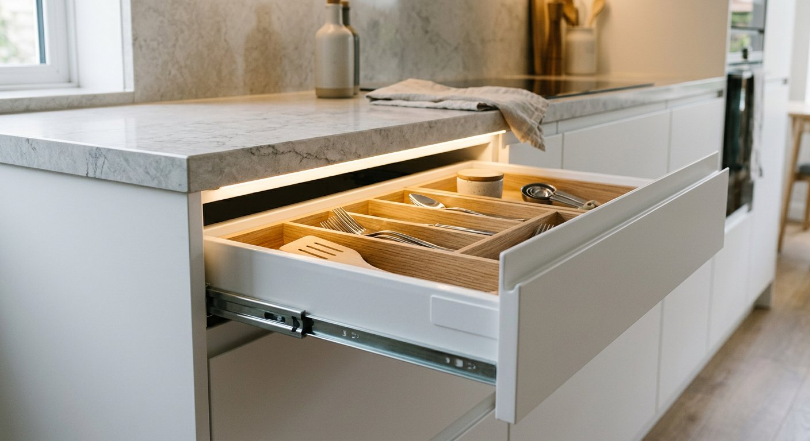
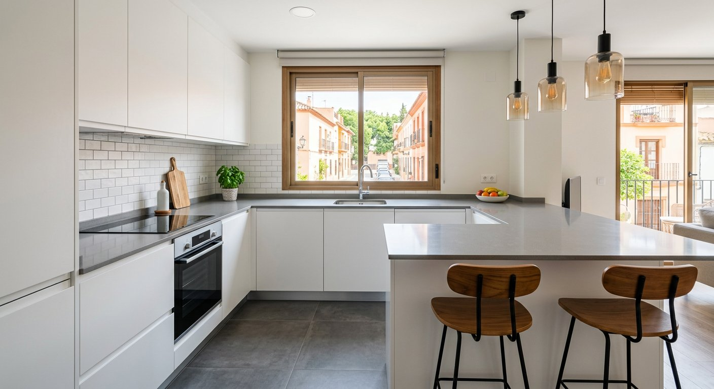

Transformamos tu cocina en un espacio funcional y moderno a tu medida.
Trabajamos en Arroyomolinos y urbanizaciones cercanas: centro, El Bosque, La Cañada, Los Ángeles, Montecastillo, La Vega y zonas residenciales adyacentes. Estamos familiarizados con los chalets, adosados y pisos de nueva construcción de la zona y sus particularidades constructivas.
En Tadelart Reformas somos un equipo de profesionales de la reforma con amplia trayectoria haciendo reformas de cocina en Arroyomolinos. Trabajamos con proveedores de confianza, gremios coordinados desde el primer día y un presupuesto totalmente cerrado antes de empezar, para que no tengas sorpresas.

Estudiamos tu espacio y tus hábitos para proponerte la distribución ideal: en L, en U, con isla, con península o lineal, siempre adaptada a tu vivienda.

Trabajamos con múltiples calidades de muebles (laminados, estratificados, lacados, madera) y encimeras (cuarzo/Silestone, Dekton, granito, porcelánico).

Coordinamos fontanería, electricidad, gas y la instalación de todos los electrodomésticos para que no tengas que preocuparte de nada.

Alicatados, suelos, iluminación LED bajo mueble, focos, pintura… rematamos cada detalle para que el resultado sea exactamente como imaginaste.

Quedamos contigo en tu vivienda para tomar medidas exactas, evaluar el estado de las instalaciones y escuchar tus ideas, necesidades y presupuesto orientativo.

Te presentamos una propuesta detallada a medida con plano de distribución, selección de materiales y un presupuesto CERRADO, sin partidas abiertas ni sorpresas.

Coordinamos todos los gremios y ejecutamos la obra siguiendo el calendario acordado. Tendrás un seguimiento continuo del avance sin tener que lidiar con varios intermediarios.

Te entregamos la vivienda limpia, lista para entrar a vivir y con todos los acabados rematados. Todas nuestras reformas tienen garantía para que estés tranquilo.

Quedamos contigo, tomamos medidas y te entregamos un presupuesto cerrado y detallado, adaptado a tus necesidades y sin sorpresas. Responde a todas tus dudas antes de decidir.
El presupuesto depende del tamaño de la cocina, los materiales elegidos, si hay que mover instalaciones y la complejidad de la obra. Entregamos un presupuesto cerrado y detallado después de visitar tu vivienda y escuchar tus necesidades, sin sorpresas.
Los plazos dependen del alcance completo del proyecto. Una vez planificado todo, te damos un calendario de obra detallado y cumplimos con él desde el primer día.
Solo si tu nueva distribución lo requiere. Evaluamos el estado de las instalaciones existentes durante la visita y te proponemos la mejor solución.
Por supuesto. Te asesoramos sobre calidades y acabados, pero la decisión final siempre es tuya.